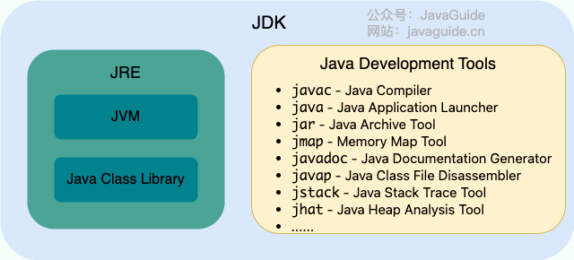

Java 基础
相关链接：
一、基础概念与常识
1.1 Java 语言特点
- 简单易学（语法简单，上手容易）；
- 面向对象（封装，继承，多态）；
- 平台无关性（Java 虚拟机实现平台无关性）；
- 支持多线程；
- 可靠性（具备异常处理和自动内存管理机制）；
- 安全性（Java 语言本身的设计就提供了多重安全防护机制如访问权限修饰符、限制程序直接访问操作系统资源）；
- 高效性（通过 Just In Time 编译器等技术的优化，Java 语言的运行效率还是非常不错的）；
- 支持网络编程并且很方便；
- 编译与解释并存；
- ……
1.2 Java SE vs Java EE
- Java SE（Java Platform, Standard Edition）: Java 平台标准版，Java 编程语言的基础，它包含了支持 Java 应用程序开发和运行的核心类库以及虚拟机等核心组件。Java SE 可以用于构建桌面应用程序或简单的服务器应用程序。
- Java EE（Java Platform, Enterprise Edition）：Java 平台企业版，建立在 Java SE 的基础上，包含了支持企业级应用程序开发和部署的标准和规范（比如 Servlet、JSP、EJB、JDBC、JPA、JTA、JavaMail、JMS）。 Java EE 可以用于构建分布式、可移植、健壮、可伸缩和安全的服务端 Java 应用程序，例如 Web 应用程序。
Java SE 更适合开发桌面应用程序或简单的服务器应用程序，Java EE 更适合开发复杂的企业级应用程序或 Web 应用程序。
1.3 JVM
Java 虚拟机（Java Virtual Machine, JVM）是运行 Java 字节码的虚拟机。JVM 有针对不同系统的特定实现（Windows，Linux，macOS），目的是使用相同的字节码，它们都会给出相同的结果。字节码和不同系统的 JVM 实现是 Java 语言“一次编译，随处可以运行”的关键所在。
不同编程语言（Java、Groovy、Kotlin、JRuby、Clojure ...）通过各自的编译器编译成 .class 文件，并最终通过 JVM 在不同平台（Windows、Mac、Linux）上运行。
1.4 JDK 和 JRE
JDK（Java Development Kit）是一个功能齐全的 Java 开发工具包，供开发者使用，用于创建和编译 Java 程序。它包含了 JRE，以及编译器 javac 和其他工具，如 javadoc（文档生成器）、jdb（调试器）、jconsole（监控工具）、javap（反编译工具）等。
JRE（Java Runtime Environment） 是运行已编译 Java 程序所需的环境，主要包含以下两个部分：
- JVM
- Java 基础类库（Class Library）：一组标准的类库，提供常用的功能和 API（如 I/O 操作、网络通信、数据结构等）

不过，从 JDK 9 开始，就不需要区分 JDK 和 JRE 的关系了，取而代之的是模块系统（JDK 被重新组织成 94 个模块）+ jlink 工具（随 Java 9 一起发布的新命令行工具，用于生成自定义 Java 运行时映像，该映像仅包含给定应用程序所需的模块）。并且，从 JDK 11 开始，Oracle 不再提供单独的 JRE 下载。
可以用 jlink 根据自己的需求，创建一个更小的 runtime（运行时），而不是不管什么应用，都是同样的 JRE。
定制的、模块化的 Java 运行时映像有助于简化 Java 应用的部署和节省内存并增强安全性和可维护性。这对于满足现代应用程序架构的需求，如虚拟化、容器化、微服务和云原生开发，是非常重要的。
1.5 字节码
在 Java 中，JVM 可以理解的代码就叫做字节码（即扩展名为 .class 的文件），它不面向任何特定的处理器，只面向虚拟机。
Java 语言通过字节码的方式，在一定程度上解决了传统解释型语言执行效率低的问题，同时又保留了解释型语言可移植的特点。所以， Java 程序运行时相对来说还是高效的（不过，和 C、 C++，Rust，Go 等语言还是有一定差距的）。
而且，由于字节码并不针对一种特定的机器，因此，Java 程序无须重新编译便可在多种不同操作系统的计算机上运行。
Java 程序从源代码到运行的过程如下图所示：

我们需要格外注意的是 .class->机器码 这一步。以 HotSpot 为例，JVM 加载字节码后可以先解释执行，并识别经常调用的方法和代码块（即热点代码），再由 JIT（Just in Time Compilation） 编译器将热点字节码编译为机器码。
在当前 JVM 进程后续执行这些代码时，可以直接使用已编译的机器码。这也解释了我们为什么经常会说 Java 是编译与解释共存的语言。不过，JVM 规范并不要求具体实现必须包含解释器或 JIT 编译器。
1.6 编译与解释并存
高级编程语言按照程序的执行方式分为两种：
- 编译型：编译型语言 会通过编译器将源代码一次性翻译成可被该平台执行的机器码。一般情况下，编译语言的执行速度比较快，开发效率比较低。常见的编译性语言有 C、C++、Go、Rust 等等。
- 解释型：解释型语言会通过解释器一句一句的将代码解释（interpret）为机器代码后再执行。解释型语言开发效率比较快，执行速度比较慢。常见的解释性语言有 Python、JavaScript、PHP 等等。

常见的 Java 实现同时使用编译和解释技术：Java 源码先由编译器生成字节码（.class 文件），字节码可由 JVM 解释执行，也可在运行时由 JIT 编译为机器码。字节码并非必须由解释器执行，具体执行策略由 JVM 实现决定。
1.7 Java 和 C++ 的区别
虽然，Java 和 C++ 都是面向对象的语言，都支持封装、继承和多态，但是，它们还是有挺多不相同的地方：
- Java 不提供指针来直接访问内存，程序内存更加安全
- Java 的类是单继承的，C++ 支持多重继承；虽然 Java 的类不可以多继承，但是接口可以多继承。
- Java 有自动内存管理垃圾回收机制(GC)，不需要程序员手动释放无用内存。
- C++ 同时支持方法重载和操作符重载，但是 Java 只支持方法重载（操作符重载增加了复杂性，这与 Java 最初的设计思想不符）。
- ……
二、基本语法
见：